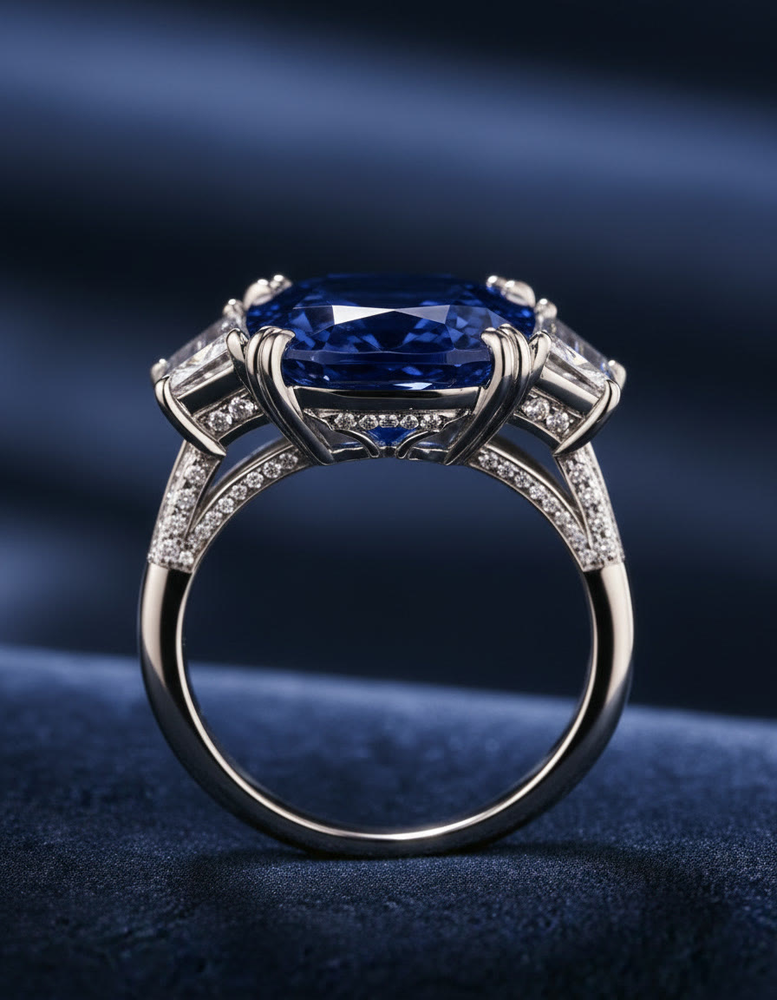
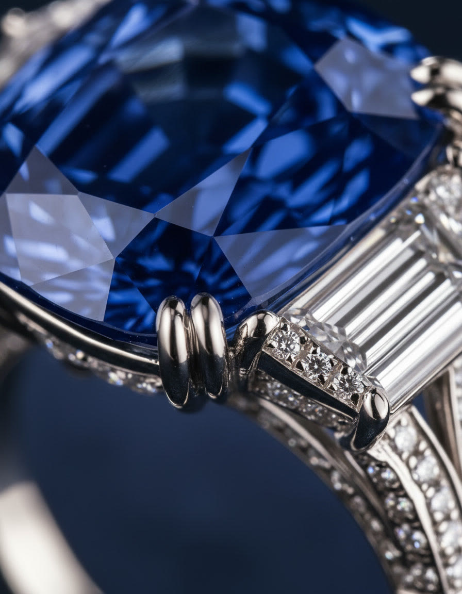
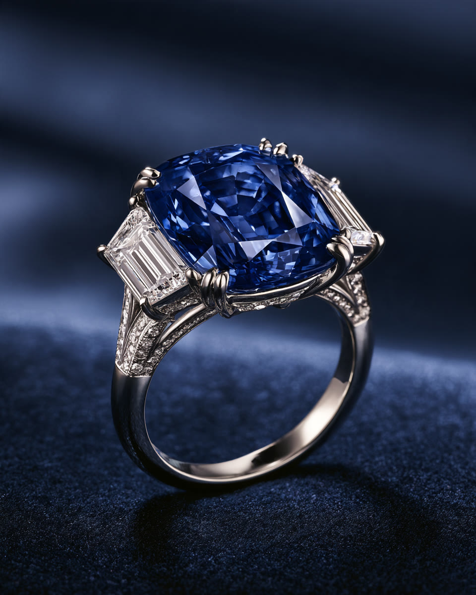

Haute Joaillerie · Pièce unique N°01
Born in the dark. Made for the light.
One cushion sapphire of deep royal blue, held in platinum between two trapeze diamonds. A single ring, made once.


I · The Stone
Light enters.
It does not leave easily.
Fifty-seven facets turn the stone into a small night sky. The deeper you look, the bluer it gets.
- Weight
- 8.12 ct
- Cut
- Cushion
- Colour
- Royal blue
- Setting
- Double claw, platinum
II · The Making
Three hands.
One ring.
-
01
The cut
The lapidary reads the crystal before touching it, then brings out its colour on the wheel, one facet at a time.
-
02
The setting
Double claws are drawn over the girdle by hand, so that the stone looks held rather than locked.
-
03

The finish
The gallery is pavé-set and polished until the platinum disappears and only the light remains.
III · In the hand
Scroll to turn the ring.
IV · Details
Nothing here
is decorative.
V · The Ritual
A ring like this
is not added to a cart.
- 01
Private viewing
In our salon, or brought to you with a courier and a jeweller.
- 02
Sizing
The atelier adjusts the shank to your hand within ten days.
- 03
Dossier
A gemmological certificate and the drawings of your ring, bound in linen.
- 04
The noir case
Delivered by hand in a lacquered midnight box.
Request
Request a private viewing.
Imagine your private viewing. This demonstration form does not send or store your details.